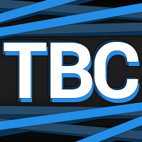

Doki Fantasy 12, Feb. 11th update Post!
February 11, 2018
Michael here with another Patreon Update! Still not sure on how to structure these so I'll be trying some new things here and there.
The Discord channel, The Broken Chatbox, got a nice face lift today with a new icon, re-arranged channels, and some permission changes with Mod Rules. We'll continue to grow the channel over-time and add/change features as things move along. Don't forget to join our gaming sessions, it's open voice!

Twitch Premiere feature didn't work out so well, it takes 6+ hours to upload to twitch... why? I have no freaking clue but I can't actually get things uploaded efficiently to even try and continue this, so I'm abandoning that idea (which I said I probably would). On a positive note I'm ready to start with my 'daily' release schedule! The idea is that I'll release a 'critic' style video every other day, and in-between will release let's play style stuff. Let's Plays have never done strongly for me, and I don't think most people will even give it a shot, but I enjoy doing it so who cares? It may also prove value-able in the future as it gives people more of an opportunity to learn who I am and to add some fun to an otherwise very serious channel. Mod/Art/Game progress is still on break for a bit longer while I sort stuff out.
A quick note, a lot of people have stated I appear rather serious when it comes to my channel, however they are rather shocked when joining our Discord Channel (The Broken Chatbox) that I'm actually really laid back and fun! Again, I feel like this is a failure on my part but this is another reason I want the Let's Play stuff, it adds the counter point and shows a lot more of my actual personality. Of-course the Podcast was suppose to fill this gap, but that never really worked out...
This was a pretty good week! (Week as in since the last post... sorry X.x) While most videos did as expected with low initial view counts my game plan doesn't change, where videos catch viewership over time. However one video that completely went above expectation was my Final Fantasy 12 PC Overview! I expected to hit a few hundred, since it was new and exactly the type of content people sub for so it would get some good sub-traction, but apparently YouTube also thought it would make good for recommendations as well, bringing in traction from a huge number of other videos! Since it was new, search rankings were also decent, but not nearly as strong as previous search hits such as Senran Kagura Estival Versus and Disgaea - which still top my traffic sources. Hopefully FF15 and Cyber-nep do as well as this one, since those will also be covered at launch...
Currently things are on hold for a bit longer. After this break I'm going to start working on a stand-alone style mini-game for Crystal Grimoire: Heart of the Goddess to get something out there (This mini-game will be a tower-defense idle hybrid which is being made from cut ideas/content but will transfer some resources into the main game). I also have some requests for Succubus Heart which I will try and get finished around next week, no promises tho.